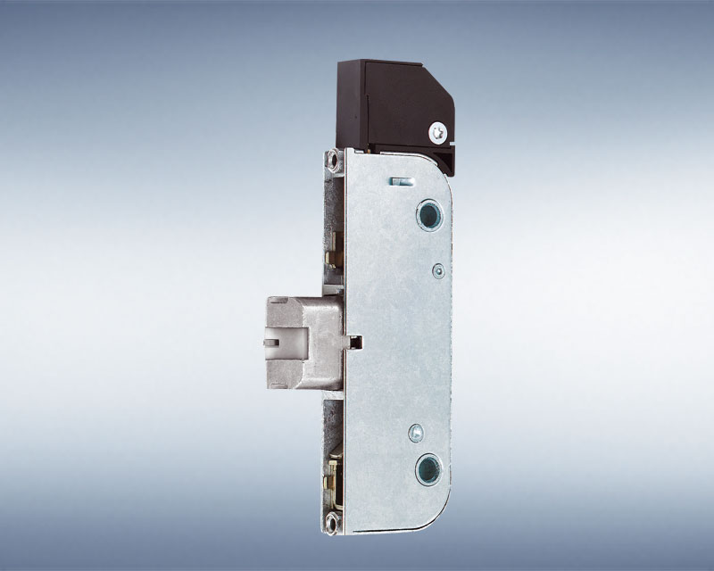
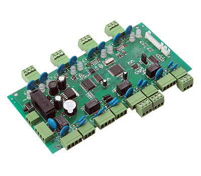
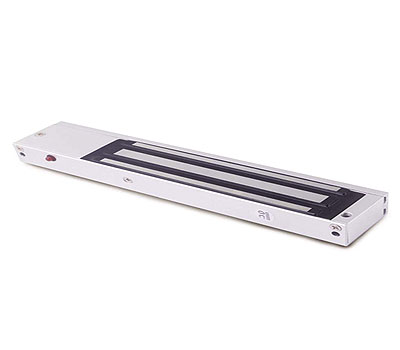
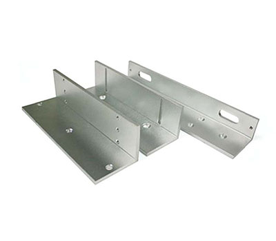

PRODUCTS
Automatic Entrance System
Our comprehensive range of automatic doors and all-glass sliding walls suitable for almost any field of application. Whichever system you choose, we support you with our well known all-round service ranging from project specific drawings, installation and commissioning through an extensive after-sales network.
Automatic Sliding Door

Automatic sliding door systems are used in a wide range of commercial and industrial applications. The advanced design and sleek styling is ideal for any architectural project. Our brand offers you and your design partners choices so that your entrances meet your exact requirements for size, color, finish as well as function, grade of construction, safety and security.
- Econo Master
- Compact Master
- Heavy Master
Automatic Curved Sliding Door

A systematic use of the available space enhances the concept of a prestigious entrance area and highlights the refined elegance of the building's design. Curved sliding door makes an architectural statement and demonstrates style and character at the first glance. A variety of configurations enable us to offer you a suitable entrance solution for almost any building. Curved sliding doors offer wider entrance openings than flat sliding doors. The door provides enough space for people pushing prams or trolleys, carrying luggage and people in wheelchairs.
- Compact Master CMR / CMR-F Curved sliding door
Automatic Swing Door
Automatic swing door operator is flexible and can be adjusted to accommodate the demands of different environments as a low energy solution. The door operation can easily be controlled and modified via a user friendly interface. Heavy duty swing operator designed for today’s busy entrance ways. The operator can be mounted on either side of the door for pull or push action and is suitable for single or double doors fitted with butt hinges or pivots.
- Turn Master
- DTU
Revolving Doors
We fabricate for you a manual or automatic revolving door designed with slim aluminium profiles, or an all-glass variant if it is for a prestigious entrance, or a large-capacity revolving door for highly frequented buildings, according to your individual preferences. If your entrance needs to be visually appealing whilst protecting the interior against draft and noise, a revolving door is the only feasible solution. We provide plenty of scope for individual design wishes.
- Standard Revolving door
- Large Capacity Revolving Door
- Security Revolving Door
- Security curved sliding door
- All Glass Revolving Door
All Glass Sliding Partition
Top hung sliding and stacking hardware for frameless glass doors. Stacking Partition System offers a variety of options to create a simple yet elegant interior space division or a large inviting mall front. Restaurants and sidewalk cafes can easily expand with indoor/outdoor seating space. The design options are limited only by own imagination.
- All glass sliding walls manual
- All glass sliding walls Automati
Aluminium Bifolding Doors
Folding Sliding Aluminium doors allow you to enclose open space and/or decide interiors, making the most available space, since once stacked, they take up very little room. Thus, they offer versatility, combinability and may adapt to fit in any kind of decoration. The ultra slim aluminium systems give you total flexibility and choice so whether you are replacing old patio doors or remodeling a space, by perhaps opening a corner of your property, we have a solution for you. We have 11 series with option to surface bottom track, flush bottom track of inner roller or flush bottom track of stainless steel. The system allows to be installed with any type of glass or panel. The leaf gaps are from 8 to 45 mm depending on the series.
Aluminium Bifolding Door
Folding Sliding Aluminium doors allow you to enclose open space and/or decide interiors, making the most available space, since once stacked, they take up very little room. Thus, they offer versatility, combinability and may adapt to fit in any kind of decoration. The ultra slim aluminium systems give you total flexibility and choice so whether you are replacing old patio doors or remodeling a space, by perhaps opening a corner of your property, we have a solution for you. We have 11 series with option to surface bottom track, flush bottom track of inner roller or flush bottom track of stainless steel. The system allows to be installed with any type of glass or panel. The leaf gaps are from 8 to 45 mm depending on the series.
Frameless Sliding Stackable System
Retractable roof systems are completely watertight and airtight and provide a high degree of insulation against the elements, ensuring optimal energy use.
The high-quality design of the profiles that make up the system ensures that they are also lightweight. They are easy to install and do not require construction work. They can be installed with rainwater gutters and downpipes.
Frameless Sliding Folding Door
The MOVIGLASS system consists of independent glass panels that can be slid away, round any angle, allowing for complete opening, with the panels concertinaed at one or both ends. The glass panels are hardened, notably increasing their mechanical characteristics (flexion, compression, impact resistance etc.). Furthermore, in the event of breakage the glass shatters into small pieces, avoiding the risk of serious injuries. Both sections and the accessories have been designed exclusively for this system. Giving durability, quality and doing the system easily operated.
Retractable Roof
Frameless Stackable System provides an all glass sliding screen without vertical framing around the glasses leaves. An ingenious stacking mechanism allows all the leaves to be slid to one side and neatly parked into a recess that allows a totally clear opening without encroaching into the room space. Translucent gaskets provide complete air tightness between each glass leaf all of which are able to be operated independently thus providing an extremely versatile and attractive screen. The glass leaves are manufactured using 6mm, 8mm or 10mm tempered glass with fully polished edges which give safe and easy operation. The opening of the leaves can be outwards as well as inwards.
Smoke Extraction and Ventilation Systems
Fires and the associated heat and smoke development are still the biggest threat to people and buildings. Every year, many people die in fire disasters, fires also cause enormous property damage. However, the threat to people and buildings not only comes from fire and heat, but especially from smoke and the arising toxic fumes. For this reason, extracting the smoke quickly and reliably is highly important. This is where smoke and heat extraction systems as components of a preventative fire protection system play their most important role: evacuating fire gases, dangerous oxides and thermal energy into the atmosphere in case of a fire. In this way, smoke levels are kept low in escape and rescue routes, thereby permitting non-assisted and assisted rescue to take place.
Smoke and heat exhaust ventilation systems (RWA)
In applications where maximum reliability is required of a smoke exhaust installation in the event of a fire and fumes need to be removed quickly into the outside air, RWA systems ensure reliable opening of exhaust apertures. This means that escape and rescue routes will be kept clear and people's lives will be protected.
Electric drive, opening and control systems
Only tested complete systems are still approved in accordance with the EN 12101-2 standard for smoke extraction in the facade. GU NSHEV system solutions for timber, timber/aluminium and aluminium profiles in various opening types offer the highest standards of security with individual flexibility.
Divders Folding Partition
Dividers Folding Partitions provide a full turnkey solution including design, manufacture, installation, servicing and repair. Our key aim is to offer every client a complete and comprehensive service providing high quality, value driven, speedy space management solutions.
Operable wall
The Operable Wall Series is used wherever room space needs to be fully utilized. Hotels, conference centers, educational establishments, offices, training areas, etc. can all benefit from the flexibility of Dividers operable walls
This operable walls series is the highest specification range of fully operable, individual-panel partition system available. Acoustic insulation of up to 56dB noise reduction is achieved with a combination of operable top and bottom seals, high performance multiple infills and a panel assembly design that allows an acoustic break between the frame and outer layer .
Folding wall system
A folding wall system that incorporates a series of flat panels (each up to 900mm wide) that are hinged together to give a flush appearance when closed. The panels are maneuvered on either a ceiling mounted track or an ultra low profile floor track system.
Sesam walls are quick to operate and are available in a range of acoustic ratings from 30dB to 49dB. Sound attenuation is achieved by modern manufacturing methods and the unique panel construction that consists of an aluminium frame, particleboard cladding and multiple acoustic infills.
Movable glass partitions
The perfect solution for storefronts, restaurants and office environments where transparent space utilization is the key requirement. It comprises of toughened glass panels secured in top and bottom profile elements which glide smoothly along an overhead track system.
Expanding wall partitions
Expanding wall partitions are the key to flexible space utilization. Whether in schools, hotels, community buildings or leisure centers, the Dividers expanding wall partition provides simple and cost effective solutions to space planning challenges, wherever space is at a premium.
The Dividers systems are track-operated, accordion-type partitions, based upon a pantographic steel frame, covered with vinyl-coated fabric as standard. All systems can be supplied for openings of unlimited width on straight or curved track. Special lead posts are available to provide for cross, T and L junctions.
Door Technology
In order to provide comfortable and secure door functions, we offers everything to ensure the smooth and trouble free interplay between functional components: a broad selection of products, technical innovations, excellent quality and comprehensive services. This naturally includes expert advice, just call if you face a difficult task, you can always count on our support.
Mortise Lock

Whether for a timber, steel, aluminium, PVC, or glass door. the extensive range of BKS locks surely offers the right mortise lock for your particular application. As market leader in the escape door lock sector, we naturally offer you a broad selection of panic locks. Like wise, our product range comprises a multitude of locks and accessories for fire protection doors and mortise locks to DIN 18251 for internal doors and project doors.
Multi-point Lock

House entrance and façade doors present special challenges with regard to burglar resistance, fire protection, tightness and accessibility. With GU multi-point locks you meet these demands in the best possible way: with additional locking elements at the top and bottom area of the door and with individual solutions for any installation situation from manual-locking versions through to self-locking systems with panic function.
Locking Systems
From the simple front door in a private home through to the modern master key system with a complex locking authorization scheme for the industrial sector. The combination of mechanical locking systems with mechatronic ones makes it possible to meet comfort and security requirements individually and economically.
Door Handle
Whether for timber, steel, aluminium, PVC, or glass doors the extensive BKS hardware range surely offers the right product for your particular application. As market leader in the panic lock sector, we naturally offer you a broad selection of appropriate push bars and touch bars in compliance with EN 1125. Like wise, we provide security hardware for extra high security requirements on apartment entrance doors and project doors.
Door Closers
The versatile range of Door Closers comprises overhead door closers and floor springs as well as special solutions for hold-open systems for 1-leaf and 2-leaf doors for standard and highly sophisticated building concepts. The closing action is controlled hydraulically. Closing force and closing speed can be adjusted depending on the door leaf size and weight.
Electric Door Strikes

The small size and a smart accessory range of electric door strikes allow you to adapt them to all customary profiles. The optional version with latch slide cover even saves you the effort of cutting a recess into the profile edge.
Escape Door System Solutions
In order to ensure safe and secure escape routes, we offer you the possibility to compose innovative system solutions with a perfect interplay of functions. All products are easy to install and commission – from panic locks (mechanical, mechatronic, motor-driven or radio-con-trolled) through to escape door terminals with electrical locking systems and escape sliding door assemblies.
Acess Control
Access control systems can monitor the door status and communicate with it lively. It has fingerprint authentication system with clear display and various access control mechanisms with a supported memory system.
Biometrics
TSG-750 (T&A and Access control)

CPU : 32bit ARM
Size : 118(W) , 163(H) 40(D)(mm)
Display : 4.3 Full touch Color LCD
Sensor : Optical / LE / Dual sensor
Communication : TCP/IP, RS485, POE, P2P, WIFI(option)
TSG-550 (T&A and Access control)
CPU : 32bit ARM
Size : 118(W) , 163(H) , 40(D)(mm)
Display : 2.8 TFT Color LCD
Sensor : Optical / LE / Dual sensor
Communication : TCP/IP, RS485, POE, P2P, WIFI(option)
TSG-250 (T&A and Access control)
CPU : 32bit RISC
Size : 60(W) , 165(H) , 40(D)(mm)
Display : 1.8†Color LCD
Sensor : Optical / LE sensor
Communication : TCP/IP, RS-485
TSG-150 (Access control)

CPU : 32bit RISC
Size : 60(W) , 150(H) , 40(D)(mm)
Display : 3 Color LED
Sensor : Optical Sensor
Communication : RS485
TSG-150S (Time & Attendance)
CPU 32bit RISC
Size : 60(W) , 150(H) , 40(D)(mm)
Display : 3 Color LED
Sensor : Optical Sensor
Communication : Bluetooth
RF Card Controller
TSG-550PC (T&A and Access control)
CPU 32bit ARM
Size : 118(W) , 163(H) , 40(D)(mm)
Display : 2.8 TFT Color LCD
RF Card : EM / HID / MIFARE / iCLASS
Communication : TCP/IP, RS485, POE, P2P, WIFI(option)
TSG-250 PC (T&A and Access control)

CPU 32bit RISC
Size : 60(W) , 165(H) , 40(D)(mm)
Display : 1.8" Color LCD
RF Card : EM / HID / MIFARE / iCLASS
Communication : TCP/IP, RS485
TSG-150 PC (Access control)
CPU : 32bit RISC
Size : 60(W) , 150(H) , 40(D)(mm)
Display : 3 Color LED
RF Card : EM / HID / MIFARE / iCLASS
Communication : RS485
Access Control Panel
TSG-100
TSG-50
Software
TSG-TAP
SDK

Accessories
EM Lock

Voltage : 12 or 24V
DC 12V 550mA, DC24V 280mA
Dimensions : 250mm(L)*42mm(W)*26mm(D)
Environment : Operational temperature range - 20C to +60C
Monitoring : Power Indicator LED / Locking Monitoring
Holding Force : 250 ~ 300 kg / 600 lbs
Holding Force : 450 ~ 500 kg / 1200 lbs
Bracket

Specification (ZL Bracket)
- Aluminum material with light weight
- ZL 350 lbs / ZL 600 lbs
Deadbolt
Voltage : 12 or 24V
DC 12V 350mA, DC24V 200mA (Standby)
DC 12V 950mA, DC24V 800mA (Start)
Dimensions : 203mm(L)×38mm(W)×39mm(D)
Environment : Operational temperature range - 20C to +60C
TSG-150 (Access control)
Specification
Voltage : - 12V DC / 2~3 A
RF Card
Specification
- EM / Mifare / HID / iClass
- 125Khz, 13.56Mhz